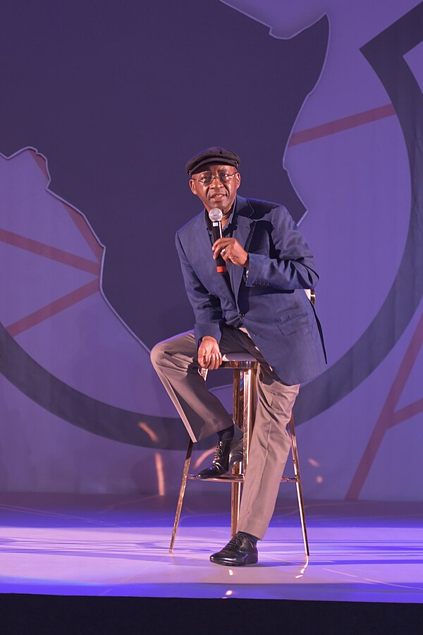

|
Strive Masiyiwa
|
|
|---|---|
|

Masiyiwa in 2019
|
|
Strive Masiyiwa (born 29 January 1961) is a London-based Zimbabwean billionaire businessman and philanthropist. He is the founder and executive chairman of international technology groups Econet Global and Cassava Technologies.[1]
Masiyiwa has provided scholarships to more than 250,000 young Africans over the past 20 years through his family foundation.[2][3] He has supported more than 40,000 orphans with educational initiatives and sponsored students at universities in America, the United Kingdom, and China.[4]
Strive Masiyiwa was born in Zimbabwe, on 29 January 1961. When he was seven, his family left the country after Prime Minister Ian Smith's government declared a Unilateral Declaration of Independence from the United Kingdom.[6] The family settled in Kitwe, a city in north central Zambia known for its copper mines. It was here that he attended primary school, before completing his secondary education in Scotland. Masiyiwa's mother was an entrepreneur. By the time Masiyiwa was 12 years old, his parents could afford to provide him with a European education.
They sent him to private school in Edinburgh, Scotland. When he graduated in 1978, he travelled back to Rhodesia, intending to join Robert Mugabe and Joshua Nkomo's anti-government guerrilla forces.[6] However, he returned to education in Britain, and earned a degree in electrical engineering from the University of Wales in 1983. He worked briefly in the computer industry in Cambridge, England, but returned to Zimbabwe in 1984, hoping to aid the country's recovery following the end of the Rhodesian Bush War and universal franchise elections in 1980.[7]
Masiyiwa's international appointments and board memberships over the years include: Unilever (board member), Netflix (board member), Bill & Melinda Gates Foundation (trustee),[8] the National Geographic Society (trustee), Bank of America (Global Advisory Council), UN Commission on Adaptation (former Commissioner), Generation Africa (co-founder), Pathways for Prosperity Commission on Technology and Inclusive Development (co-chair), The Rockefeller Foundation (former board member),[9] US Council on Foreign Relations (former Global Advisory Board 2012-2023),[10] the Asia Society (former board member), Stanford University (Global Advisory Board), the Africa Progress Panel,[11] Alliance for a Green Revolution in Africa (chair, now Chair Emeritus),[12] The Micronutrient Initiative of Canada (former board member),[13] Grow Africa, the African Union's Ebola Fund (co-founder),[14] Morehouse College(former Trustee),[15] the African Academy of Sciences (Honorary Fellow) and the Pan African Strategic Institute. He was recently involved in helping to organize the Global Africa Business Initiative launched in New York in 2022.
Masiyiwa is the only African member of the United States Holocaust Memorial Museum's Committee on Conscience.[16] Masiyiwa also served on two UN Advisory Panels.[17]
In 2011, The Times of London named him one of the 25 Leaders of Africa's Renaissance Award.[18]
In 2014, Fortune Magazine named Masiyiwa one of the 50 most influential business leaders in the world,[19] and he was cited as one of the Top 100 most influential Africans by New African magazine.[20][21]
In September 2014, the Chair of the African Union (AU), Nkosazana Dlamini-Zuma, asked Masiyiwa to help mobilise resources for Africa's response to the Ebola outbreak. This was the first time The AU had asked a business leader to undertake such a role.[22][23] Masiyiwa, with the help of other leaders, set up the first ever Pan-African fund-raising campaign known as #AfricaAgainstEbola Solidarity Fund.[24]
The fund raised millions of US dollars from the public using SMS donations, with contributions coming from many African countries. The donations enabled The AU to deploy the largest known contingency of African healthcare workers to combat the spread of the deadly pandemic.[25]
In 2015, Forbes Magazine named Masiyiwa in the 10 Most Powerful Men in Africa list for 2015,[26] and the International Rescue Committee (IRC) awarded Masiyiwa the Freedom Award.[27][28] The award is given annually to an individual who makes an extraordinary contribution towards supporting refugees and championing the causes of liberty, individual freedom, and dignity.[29]